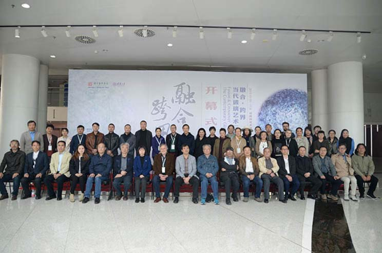
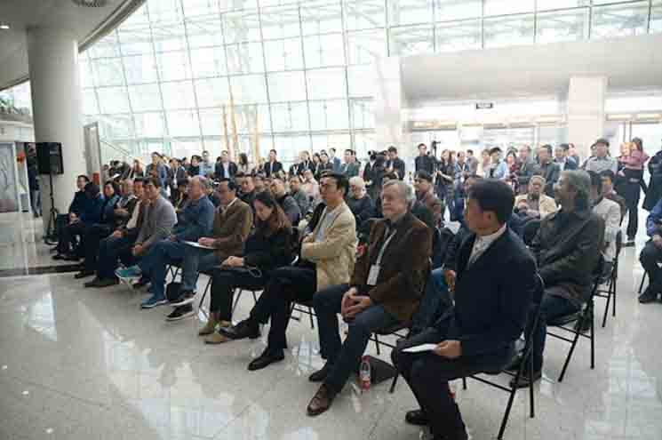
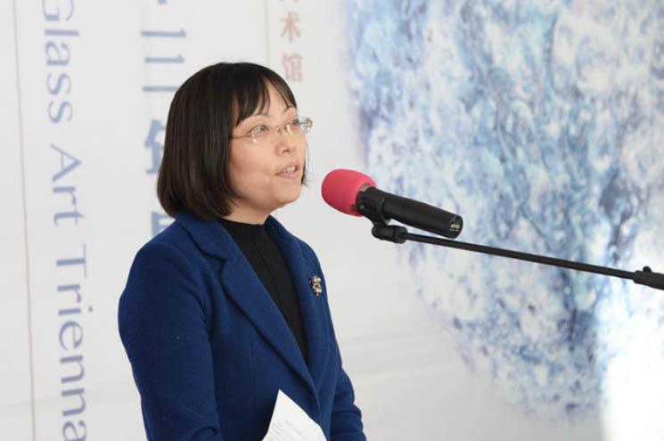
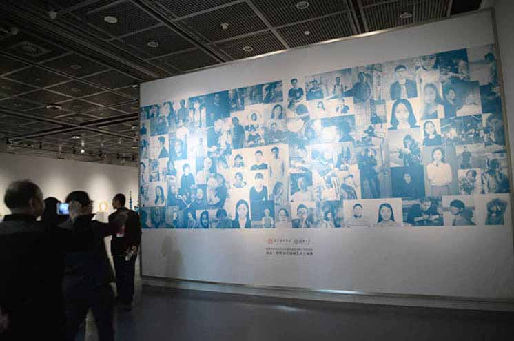
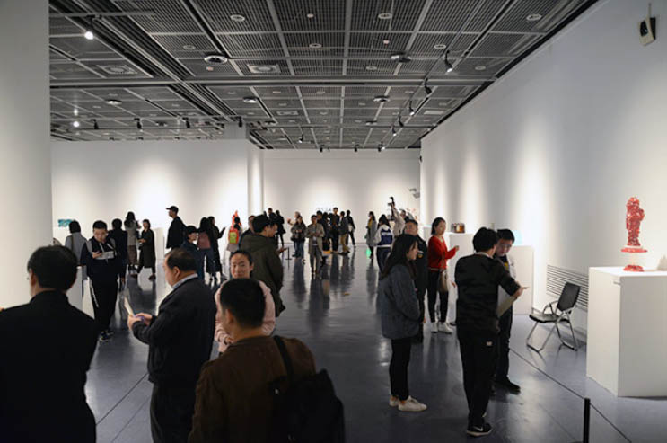
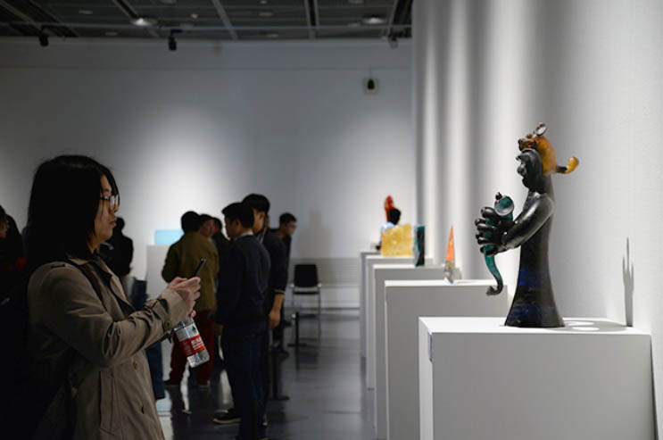
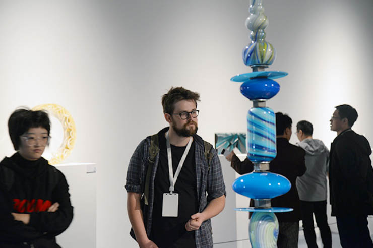
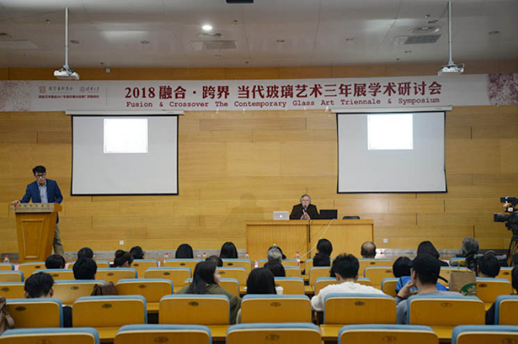
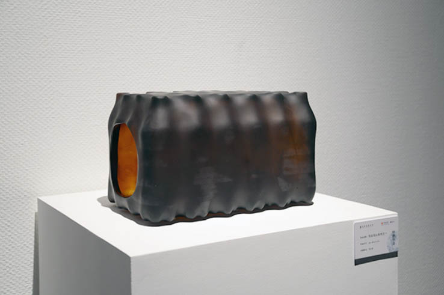

深圳市宝安区福永街道新和社区
远东西路6号3栋
第二届中国当代玻璃艺术三年展暨学术论坛于河南省美术馆开幕
日期：2018-10-15 8:22

“融合·跨界”——第二届中国当代玻璃艺术三年展开幕式现场
2018年10月19日，国家艺术基金2017年度传播交流推广项目“融合·跨界”——第二届中国当代玻璃艺术三年展暨学术论坛在河南省美术馆开幕。本次展览活动由清华大学主办，中国工艺美术协会、中国国家画院协办，清华大学美术学院、中国国家画院公共艺术院、河南省美术馆和中国工艺美术协会玻璃艺术专业委员会联合承办。

“融合·跨界”——第二届中国当代玻璃艺术三年展开幕式现场
清华大学美术学院党委副书记、清华大学艺术博物馆副馆长邹欣，清华大学美术学院工艺美术系主任洪兴宇，工艺美术系副系主任、本次展览策展人关东海，绘画系教授王宏剑，河南省美术家协会顾问曹新林，河南省美术馆馆长化建国，河南省美协设计艺委会主任付中承，澳大利亚著名玻璃艺术家Gerry King，北京国际设计周组委会策划总监曾辉，中国国家画院公共艺术院玻璃艺术研究所所长刘立宇，国家艺术基金评审专家：河南大学艺术学院教授、美术研究所所长、河南省美术家协会副主席袁汝波，中国摄影家协会副主席、河南省摄影家协会主席、河南省文联副主席刘鲁豫，郑州轻工业学院副教授杨远，河南省国家艺术基金办公室副主任明巧玲，以及中央美术学院、中国美术学院、上海美术学院、广州美术学院、吉林艺术学院等各大高校美术学院玻璃专业负责人，相关企业领导，参展艺术家等百余人出席了开幕式。开幕式由河南省美术馆副馆长于会见主持。化建国，邹欣，Gerry King，曹新林，参展艺术家代表胡东方先后致辞。

清华大学美术学院党委副书记、清华大学艺术博物馆副馆长邹欣发言
清华大学美术学院党委副书记、清华大学艺术博物馆副馆长邹欣在开幕式上表示：“本次展览整体水平很高，涌现出了许多玻璃艺术新人，还有一些独立艺术家的加盟，作品评审的要求也更加严格，从报名的327件作品中精心挑选再加上特邀作品共125件作品最终展出，更可喜的是报名参加的院校数量增加到了30多所，这从一个侧面反映了近年来玻璃艺术人才培养和学科建设的发展与成果。正如秋天是收获的季节，我想今天我们也在此一起收获了由多所艺术院校教师、同学、独立艺术家们共同耕耘、创造的当代玻璃艺术的丰硕成果。”

“融合·跨界”——第二届中国当代玻璃艺术三年展开幕式现场

“融合·跨界”——第二届中国当代玻璃艺术三年展展览现场幕式现场
作为国内玻璃艺术领域规模最大、涵盖最广、水平最高的学术交流活动，此次当代玻璃艺术三年展收到国内各大艺术院校、独立艺术家的玻璃艺术作品，包括玻璃陈设作品、首饰、小型雕塑、装置等327件（套）。经过多位专家评委的匿名评审共有130件（套）作品入选此次三年展，其中包含20件特邀艺术家作品。开幕式上，洪兴宇教授宣读了获奖名单。

玻璃材料是最早的人工合成材料，玻璃工艺在中国有悠久的历史和传统。2014年，由清华大学美术学院主办首届“中国当代玻璃艺术三年展暨学术研讨会”汇集来自全国206位艺术家的279件作品，是迄今中国规模最大的一次全国性的玻璃艺术盛会，产生了广泛的社会影响力。

“融合·跨界”——第二届中国当代玻璃艺术三年展展览现场
配合展览主题，当天下午举办了学术研讨会，与会嘉宾各抒己见，针对当代玻璃艺术的融合和跨界，艺术创作和艺术教育等方面展开热烈讨论。会议上半场由中国美术学院手工艺术学院副书记、副院长李玉普主持。澳大利亚著名玻璃艺术家Gerry King，琉园、琉璃工房、八方新气创办人王侠军，香港浸会大学助理教授王铃蓁，上海大学上海美术学院教授庄小蔚先后发言。

“融合·跨界”——第二届中国当代玻璃艺术三年展学术研讨会现场
下半场由吉林艺术学院设计学院副院长金巍主持。中央美术学院城市设计学院玻璃艺术实验室负责人赵江凌，中国美术学院手工艺术学院工艺系主任、玻璃专业负责人李文，广州美术学院玻璃实验室主任王朝虹，吉林艺术学院设计艺术学院青年教师闫峰，清华大学美术学院工艺美术系青年教师李静依次发言。
中国当代玻璃艺术三年展秉持“根植中国，面向当代”的学术理念，聚焦中国玻璃艺术本体语言的构建，拓展中国当代玻璃艺术的发展格局，探讨玻璃艺术在高等院校教育体系下更多可能性，向世界展示中国传统造物文化和当代艺术文化成就，提升中国的文化软实力和影响力。
据悉，本次展览展期将持续至2018年11月04日。
